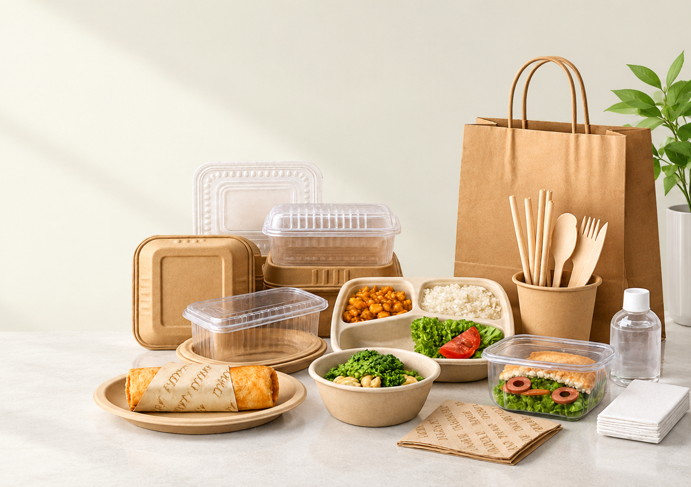

Packaging for
food businesses
that scale.
Plastic and eco-friendly containers, meal trays,
and disposables,
for resellers and kitchens across India.

One supplier for the whole takeaway counter.
Athena Superpack Pvt Ltd is one of India's leading disposable food-packaging companies. Under our brand Zapac, we serve food businesses, resellers, corporate customers, hotels, restaurants, cloud kitchens, and other HORECA clients with reliable containers, trays, glasses, wrapping, and hygiene products designed for modern operations.
In-house manufacturing, pan-India delivery and customised packaging are part of our published catalogue positioning.
- Complete range of plastic and eco-friendly food packaging
- Containers, plates, bowls, meal trays, glasses, and tissues
- Customised and premium HORECA packaging
- Strong reseller network across Maharashtra
The Zapac catalogue
Eleven product families. Open one to see its ranges, or search by name.
01Plastic Takeaway ContainersCatalogue pp. 1–5
Round, rectangular, and premium meal boxes in food-grade plastic — hinged lids, separate lids, and dome options for delivery and catering.
- Dip Plastic Container
- Round Plastic Container
- Rectangle Plastic Container
- Premium Plastic Containers
- BucketsRo / Re Series
- Tamper Proof - Round
- Tamper Proof - Rectangle
- Plastic Bowl Container
- Plastic Sweet Box
02Eco-Friendly Takeaway ContainersCatalogue pp. 6–10
Bagasse, kraft, and compostable-format containers for brands moving toward lower-impact takeaway packaging.
- Cornstarch Round Product
- Cornstarch Rectangle Product
- Cornstarch Clamshell Product
- Bagasse Clamshell Brown / White
- Anti-Leak Bagasse Round Container
- Anti-Leak Bagasse Rectangle Container
- Paper Food Box - White & Kraft
- Paper Salad Bowls with Lid
- Paper Tubs with Lid - White & Brown
- Corrugated Pizza Box
03Meal TraysCatalogue pp. 11–13
Multi-compartment trays with matching lids for thalis, combo meals, and institutional catering — available in several cavity counts.
Enquire about this range04Beverage ProductsCatalogue pp. 14–17
Paper cups, ripple glasses, and related beverage service disposables for cafés, QSR, and HORECA counters.
- Paper Beverage Product
- Ripple Beverage Product
- Plastic Lid
- Bagasse Lid
- Paper Lid
- Plastic Beverage Product
- Pet Bottles
- Glass Bottles
05Food WrappingCatalogue pp. 18–19
Foil, paper, and film products for wrapping, lining, and protecting food during prep, storage, and delivery.
Enquire about this range06Serving Bowls, Plates & TraysCatalogue pp. 20–22
Plates, bowls, and serving trays for dine-in, events, and takeaway — plastic and eco formats.
Enquire about this range07Cutlery, Straws & StirrersCatalogue pp. 23–25
Forks, spoons, knives, straws, and stirrers aligned with takeaway and dine-in service needs.
Enquire about this range08Delivery BagsCatalogue pp. 26–27
Carry and delivery bags suited for food orders, including kraft and reinforced options.
Enquire about this range09PET ProductsCatalogue pp. 28–31
Clear PET hinged and format containers for salads, desserts, and chilled display.
Enquire about this range10Safety & HygieneCatalogue pp. 32–35
Gloves, caps, and hygiene disposables to support safe food handling in kitchens and service areas.
Enquire about this range11Other ProductsCatalogue pp. 36
Additional disposables and packaging accessories — refer to the full Zapac catalogue for codes and pack sizes.
Enquire about this rangeNo product family matches that search. Try a shorter word, or ask our team.
Eco-friendly formats, alongside the core range.
Cornstarch, bagasse and paper products sit in the same catalogue as our plastic lines, so a kitchen can order both from one supplier.
Material properties vary by product. Check the catalogue entry for the exact item before making any environmental claim to your own customers.
Explore eco-friendly rangeCornstarch
Round, rectangle and clamshell containers.
3 rangesBagasse
Clamshells in brown and white, plus anti-leak round and rectangle containers, meal trays and lids.
Takeaway and beveragePaper and kraft
White and kraft food boxes, salad bowls and tubs with lids, and beverage lids.
Food and beverageCorrugated
Pizza boxes for delivery and takeaway.
Pizza boxWhy procurement teams work with Athena.
Broad assortment
Takeaway, meal trays, beverage disposables, wrapping, PET and hygiene, organised in one catalogue.
Reseller network
500+ reseller clients across Maharashtra, supported by three warehouses.
HORECA and corporate supply
Supply for hotels, restaurants, cloud kitchens and corporate food service across India.
Customised packaging
Customised and premium HORECA packaging is part of our range. Talk to the team about formats and volumes.
Mission
Our mission is to make India more sustainable by providing eco-friendly, safe and innovative packaging solutions. We aim to deliver quality, convenience and affordability while reducing environmental impact and supporting the growth of our partners in the food and hospitality industry.
Vision
At Athena Superpack Pvt Ltd, our vision is to lead India toward a sustainable future with innovative, eco-friendly food packaging solutions that make everyday consumption greener and smarter.
Planning an order? Tell us what you need.
Share the products, rough monthly volume and delivery location. Our team will reply with next steps.